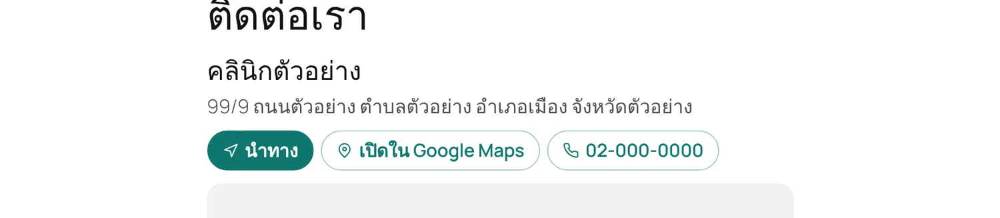
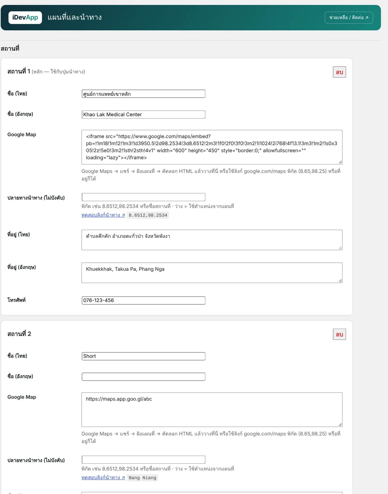

1ความสามารถ

- วาง โค้ดฝังแผนที่ ลิงก์ google.com/maps พิกัด หรือที่อยู่ก็ได้ ไม่ต้องสมัคร API key
- หลายสถานที่ เช่น โรงพยาบาลหลัก อาคารผู้ป่วยนอก ลานจอดรถ
- ปุ่ม นำทาง ดึงพิกัดจากโค้ดฝังแผนที่ให้เอง เปิดแอป Google Maps พร้อมเส้นทาง
- ชื่อและที่อยู่ไทย/อังกฤษ ปรับความสูง มุมโค้ง และสีปุ่มได้
- รอการยินยอมคุกกี้ เมื่อใช้ iDev Cookie Consent (Google อาจตั้งคุกกี้เมื่อโหลดแผนที่)
2เริ่มต้นใช้งาน
- คัดลอกโค้ดฝังแผนที่
เปิด Google Maps ค้นหาสถานที่ → แชร์ → ฝังแผนที่ → คัดลอก HTML
- เพิ่มสถานที่
iDevApp › แผนที่และนำทาง วางโค้ดในช่อง Google Map ใส่ชื่อ ที่อยู่ และเบอร์โทร กด ทดสอบลิงก์นำทาง เพื่อตรวจตำแหน่ง

iDevApp › แผนที่และนำทาง - วางแผนที่ในหน้า
ใส่บล็อก แผนที่และนำทาง หรือ
[idev_map]ในหน้าติดต่อเรา
ลิงก์ย่อ maps.app.goo.gl ฝังเป็นแผนที่ไม่ได้ ให้ใช้ "ฝังแผนที่" แทน (ปุ่มนำทางยังใช้ลิงก์ย่อได้) ถ้าปุ่มนำทางไปผิดที่ ใส่พิกัดในช่อง ปลายทางนำทาง เช่น 13.7563,100.5018
3บล็อกและ Shortcode
| Shortcode | ผล |
|---|---|
[idev_map] | แผนที่ของสถานที่ 1 พร้อมปุ่ม |
[idev_map location="1"] | สถานที่ 2 (location นับจาก 0) |
[idev_map height="300" buttons="no" address="no"] | ปรับความสูง ซ่อนปุ่มหรือที่อยู่ |
[idev_map map="no"] | เฉพาะชื่อ ที่อยู่ และปุ่ม ไม่โหลดแผนที่ |
[idev_directions label="นำทางมาโรงพยาบาล"] | ปุ่มนำทางอย่างเดียว (ใช้ใน footer หรือแถบล่างมือถือ) |
PHP: idev_map_render(['location' => 0]) · idev_maps_directions_url(0) คืนลิงก์นำทาง